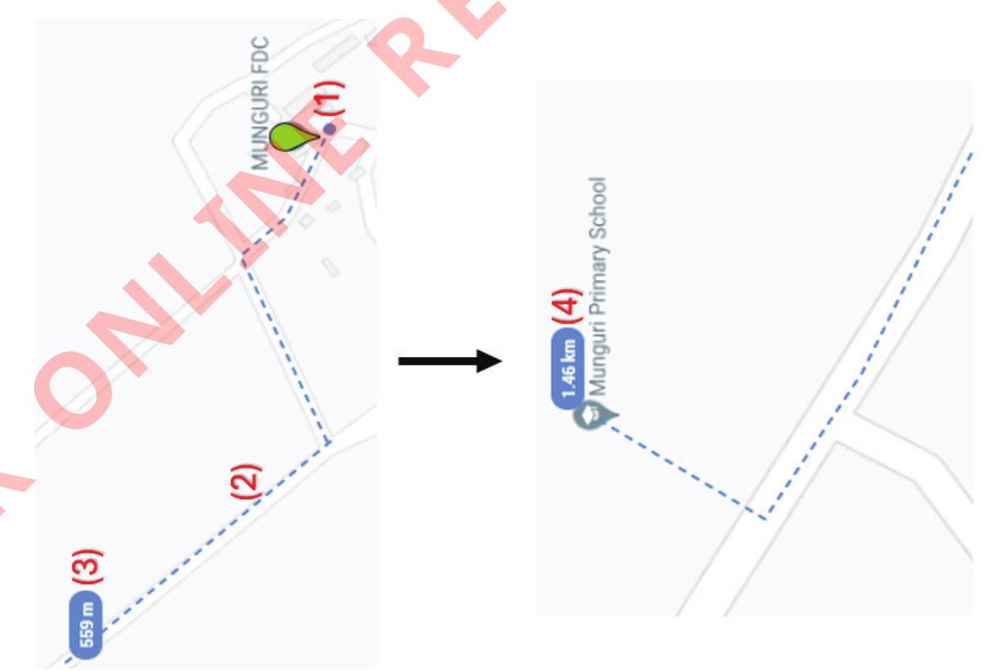

Figure 24: Selecting the ruler icon for distance measurement
(e) Then, move the cursor and click on the first point (that is Munguri FDC) (1) and start measuring the distance by tracing the route towards Munguri Primary School as presented in Figure 25.Continue tracing the route until you reach Munguri Primary School.Once you reach Munguri Primary School, double-click to finish measuring the distance and the distance obtained (4) is displayed as presented in Figure 25.Therefore, the distance from Munguri FDC to Munguri Primary School is 1.46 kilometres.

Figure 25: Tracing the route to measure the distance from Munguri FDC to Munguri Primary School